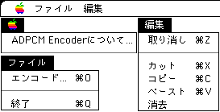
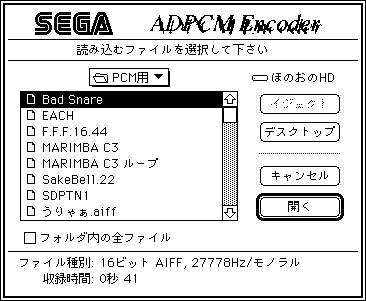
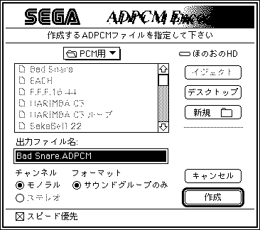
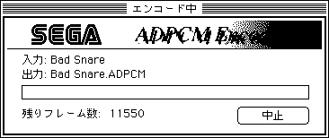

ADPCM EncoderはSEGASATURNのADPLIBにて使用可能なADPCMデータを生成するツールです。
入力として、AIFFまたはSound Designer IIフォーマットで8/16/24ビットのモノラルまたはステレオのファイルを扱うことができます。なお、Fs(サンプリング周波数)変換は行いませんので、入力ファイルはあらかじめFs=37.8kHz(Level B)、又はFs=18.9kHz(Level C)にしておく必要があります。
■ADPCM Encoderの動作環境
- ADPCM Encoderが動作するための条件は以下の通りです。
- 68020以上のCPUを搭載したApple Macintoshコンピュータ
- 漢字Talk 7
■ADPCM Encoderの起動
- 起動は、ADPCM Encoderのアイコンをダブルクリックすることで行います。
■ADPCM Encoderのメニュー
- ADPCM Encoderには以下のようなメニューがあります。

- "ADPCM Encoderについて"は、ADPCM Encoderのバージョン等の情報を表示します。
- "エンコード..."にてファイルの選択をし、ADPCMへのエンコードを開始します。
- "終了"はADPCM Encoderを終了させます。
- 編集メニューは特に使用しません。
■入力ファイルの指定
- 起動時および、何もしていない状態でフォアグラウンドに遷移したとき、またはファイルメニューからエンコードを選択したとき、次のようなダイアログが表示されます。ここで入力ファイルを指定します。
複数のファイルを一括エンコードしたい場合は「フォルダ内の全ファイル」チェックボックスチェックしてエンコードしたいファイル群のあるフォルダの中のどれか１つのファイルを選択してください。

■出力ファイルの指定
- 入力ファイル及びファイル群を指定し終わると、続いて次のようなダイアログが表示されます。ここで出力ファイルを指定します。

-
- 一括エンコード時の注意点
エラーについては従来通りですが、一括エンコード中にどれかのファイルがエラーをだした場合そこでエンコードは中止されます。
エンコードされたファイルに同名ファイルが存在した場合は上書きされますのでエンコード先のフォルダは新規ボタンで作ってから保存する事をおすすめします。
■エンコード中の動作
- エンコード中は以下のようなダイアログが表示されています。

- 中止ボタンをクリックすることで、エンコードを中止することができます。
- エンコード中は他のアプリケーションに切り替えることができます。
- このダイアログは自由に移動することができます。ただし、複数のモニタを使用している場合は、移動できるのはメインモニタ上だけです。
■フォーマットについて
- 出力ファイルは単純なサウンドグループ配列になっており、特にヘッダ部やセクタ境界のフィラーを持ちませんので、そのままSEGA SATURNのADPLIBで使用することが可能です。
ただし、サンプル周波数やチャンネル数に対する情報を持たないため、ファイルからこれらの情報を得ることはできません。また、CDビルドアップ時、Fsやbit長などのデータをビルダーに渡す必要があります。詳しくはビルダーの仕様書を参照してください。
出力データのフレーム数は、サウンドグループ単位(224サンプル)になるよう切り上げられます。
サウンドグループの構造については、SEGASATURN ADPLIBのドキュメントを参照して下さい。
■エラーメッセージについて
- このプログラムの実行には、System 7または漢字Talk 7以降のOSが必要です
- 現在動作しているOSが古いものの可能性があります。
- このプログラムの実行には、MC68020以上のCPUが必要です
- 68000CPUのマックで起動されています。
- 必要なメモリを確保できませんでした
- 実行に必要な最低限のメモリが確保されていません。
- 8,16,24ビット幅のデータ以外は変換できません
- 上記以外のデータで変換を行おうとしています。
- チャンネル数が3以上のデータは変換できません
- モノ（１チャンネル）ステレオ（２チャンネル）以外のデータで変換を行おうとしています。
- OS Error
- 認識コードのないエラーです。
- ファイルが壊れているか、予期した構造になっていません
- 変換するファイルが正しいデータフォーマットになっていないことを示します。
- サポートしていないデータタイプです
- AIFF、サウンドデザイナー２以外のデータを変換しようとしています。
- 必要なリソースを読み込めないか、リソースが壊れています
- サウンドデザイナー２のファイルが壊れている可能性があります。
- AIFFファイルでもSound Designer IIファイルでもありません
- 認識されないデータを変換しようとしています。
■読み込むAIFFの制約について
- 最低限"COMM"チャンクは必要です。Fsは必ず、37.8kHz又は18.9kHzに設定しておいてください。